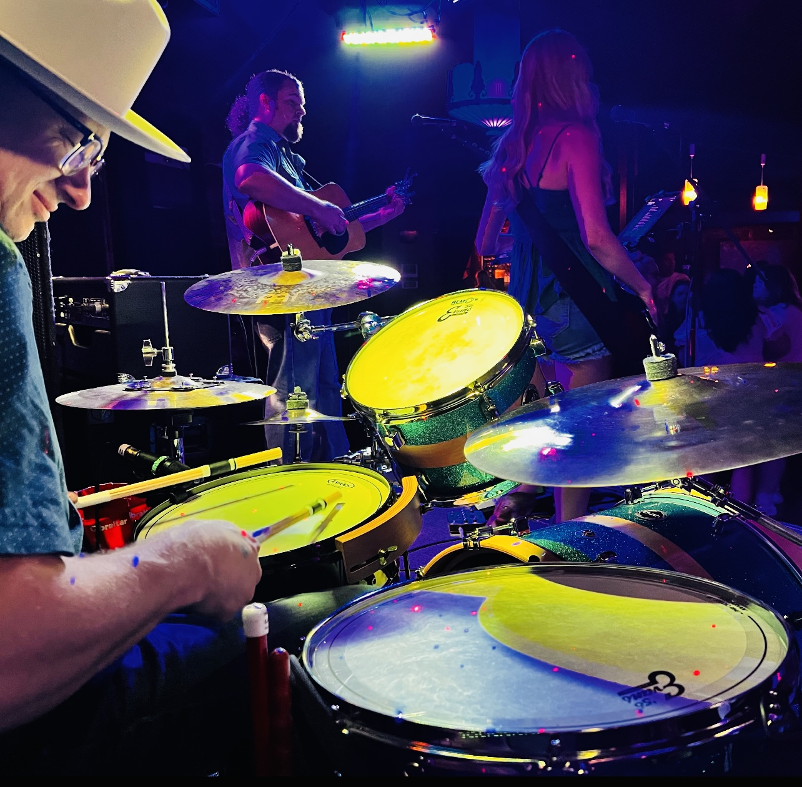
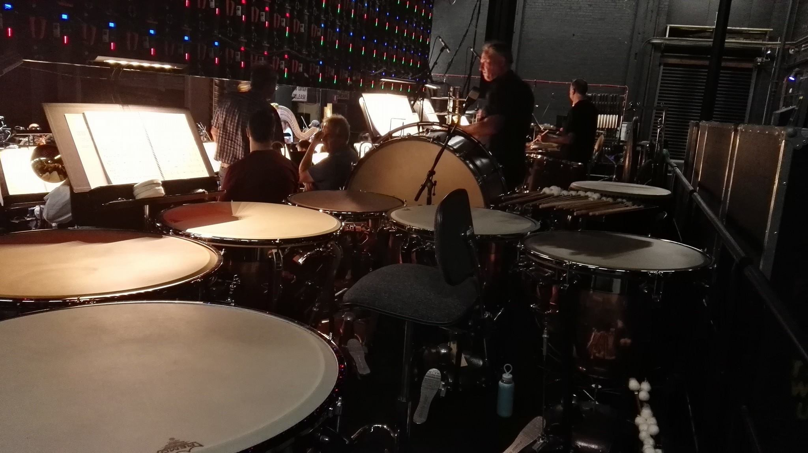
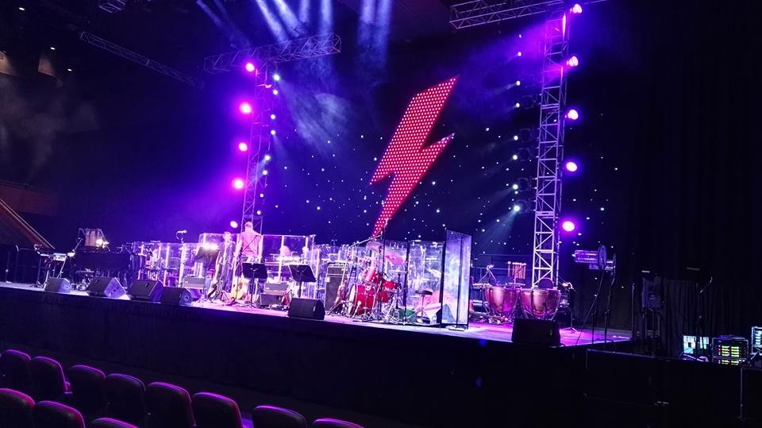
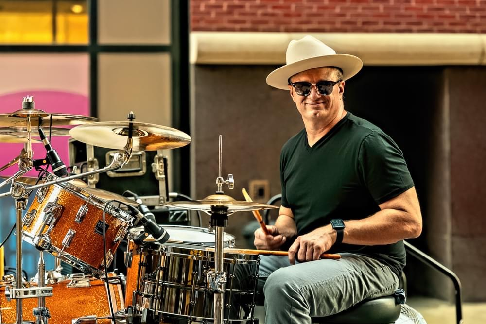

Photos





St. Louis-based session drummer Jared Rooks is available for recording sessions, live performances, touring, worship events, and fill-in opportunities. With experience in both studio and live environments, Jared serves artists, producers, churches, and bands throughout Missouri and across the United States.
Known for strong pocket, musical versatility, and a commitment to serving the song, Jared brings professionalism, consistency, and musical excellence to every project.
From intimate clubs and theaters to arenas, festivals, and large-scale productions, Jared Rooks has earned a reputation as a dependable and versatile drummer capable of adapting to a wide range of musical environments.
His experience includes recording sessions, touring productions, worship events, corporate performances, theater productions, festivals, and collaborations with both local and national artists.
Known for strong pocket, musical sensitivity, and professionalism, Jared brings consistency, preparation, and a commitment to serving the song whether in the studio, on stage, or on tour.
Professional drum tracks for artists, producers, songwriters, and bands.




Watch recent performances, live clips, and collaborations.